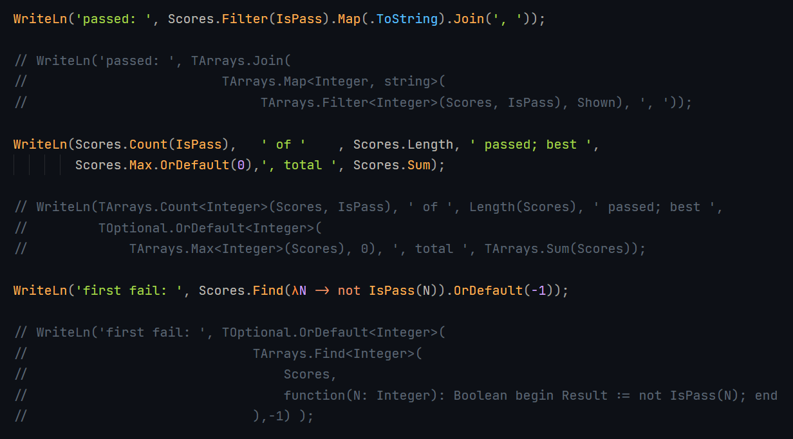

Generic type inference in Delf: inside and outside
In Delphi, a generic call's type arguments must be written unless the compiler can read every one of them from the arguments, and it can't read through a routine or lambda passed as a value. Delf drops that red tape. The translator, delfc, works the type arguments out and writes them into the plain Delphi it generates, so the Delf source reads as the call you meant. It looks in two places:
- Inside: the call's own arguments.
- Outside: where the call's value goes: the declared type of the variable it's assigned to, the type of the parameter it's passed to, or the function's result type when it's in
Exit( … ).
The outside type is used first, then the arguments. Only a type already settled where the call stands counts, not an enclosing generic call's still-open type parameters. If the two disagree, the error points at the argument and names both sources, including where the outside type was stated, for example:
the lambda answers string, but Map's U is Integer, from Lengths' result (25:46)

not IsPass(N)).OrDefault(-1), each above the plain Delphi it stands for in comments, with every type argument written out: TArrays.Map<Integer, string>, TArrays.Filter<Integer>, TOptional.OrDefault<Integer> and an anonymous function in full.">Example 1: inside, from the arguments
From an Advent of Code solution, with data1 and counts both TList<integer>, and mult a function (i, j: integer): integer:
// Delf
var data := ZipTransform(data1, counts, mult);
// generated Delphi
var data := __dpp_Free_U_Utils_Functional.ZipTransform<integer, integer, integer>(data1, counts, mult);ZipTransform<T, U, V>(L1: TList<T>; L2: TList<U>; f: TFunc<T, U, V>): TList<V> gets T and U from the lists and V from mult's result. Delphi alone can't do this, because mult is a routine passed as a value. In Delf, a generic routine can also be declared on its own at unit level, and delfc puts it on a record for Delphi (__dpp_Free_<unit>), since Delphi allows generic routines only as methods.
Example 2: outside, from where the value goes
function MakeList<T>: TList<T>; // nothing to infer T from inside
function Count(const L: TList<string>): Integer;
var Names: TList<string> := MakeList(); // MakeList<string>(): from the variable's type
WriteLn(Count(MakeList())); // MakeList<string>(): from Count's parameterNothing in either call says string; the place its value goes does. The same happens in a result: in a function answering Optional<Optional<Integer>>, Exit( Found.Map(λx -> Absent) ), where Found is an Optional<Integer>, needs nothing written, since the signature supplies Map's U.
When you must write one
Write _ for each type argument delfc should still infer, and only the ones it can't: Found.Map<_, Optional<Integer>>(λx -> Absent) names U and leaves T to be determined from Found. The slots follow the declaration's list, and a wrong count is an error that suggests the _ form.
In the editor
In the Zed editor, using the Delf extension, the inferred type arguments are not shown as ghost text, since leaving them out is the point. Hovering on the call's name shows the routine as declared and what each type parameter is here, with alike ones together:
function ZipTransform<T, U, V>(L1: TList<T>; L2: TList<U>; f: TFunc<T, U, V>): TList<V>
T, U, V = integerKnown limit
A generic call with no arguments needs its parentheses: MakeList(). Written bare, MakeList isn't treated as a call, so nothing is inferred and Delphi reports Undeclared identifier (found 5 Nov).